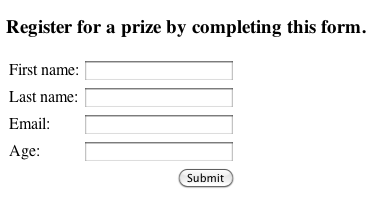
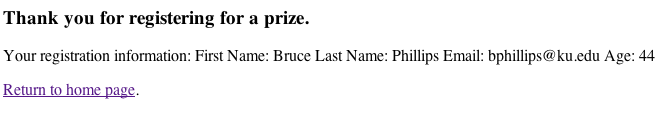

| This tutorial assumes you've completed the Coding Struts 2 Actons tutorial and have a working Coding_Actions_Struts2_Ant (or Coding_Actions_Struts2_Mvn) project. The example code for this tutorial, Form_Processing_Struts2_Ant or Form_Processing_Struts2_Mvn, is available on Google Code - http://code.google.com/p/struts2-examples/downloads/list. After downloading and unzipping the file, you'll have a folder named Form_Processing_Struts2_Ant (or Form_Processing_Struts2_Mvn). In that folder will be a README.txt file with instructions on now to build and run the example application. |
Introduction
In this tutorial we'll explore using Struts 2 to do more involved processing of a form submission. We'll cover how to use a Java model class to store the form input and how to create the Struts 2 form to match up with that model class.
The code provided in this tutorial may be added to the Coding Struts 2 Actions example or you can download this complete example from Google Code - http://code.google.com/p/struts2-examples/downloads/list.
| The Struts 2 user mailing list is an excellent place to get help. If you are having a problem getting the tutorial example applications to work search the Struts 2 mailing list. If you don't find an answer to your problem, post a question on the mailing list. |
Forms and A Java Model Class
For this tutorial let's say we need to provide a form that a user may submit to register for a prize drawing. Our business rules state the user must provide his/her first name, last name, email address, and age.
To encapsulate this data, we'll use a simple Java class that follows the basic Java Bean specifications (public set/get methods for each instance field). If you're following along add this class to package org.apache.struts.register.model in the Coding Struts 2 Actions example.
public class Person { private String firstName; private String lastName; private String email; private int age; public String getFirstName() { return firstName; } public void setFirstName(String firstName) { this.firstName = firstName; } public String getLastName() { return lastName; } public void setLastName(String lastName) { this.lastName = lastName; } public String getEmail() { return email; } public void setEmail(String email) { this.email = email; } public int getAge() { return age; } public void setAge( int age) { this.age = age; } public String toString() { return "First Name: " + getFirstName() + " Last Name: " + getLastName() + " Email: " + getEmail() + " Age: " + getAge() ; } }
Note a few points about the above class. There is a public set/get method for each instance field. The age attribute is of type integer. We've defined a public toString method that returns a String representing the state of the object. Since we haven't specified a constructor, Java will provide a default constructor that will set all instance fields to their null values.
Form Structure
To collect the above information we'll use a Struts 2 form. When creating this form the key concept we need to employ is to tie each form field to a specific instance field of an object of type Person. Let's look over the form first and then discuss some key points. Create a view page named register.jsp (in WebContent (Ant version) or src/main/webapp (Maven version) )
<?xml version="1.0" encoding="ISO-8859-1" ?> <%@ taglib prefix="s" uri="/struts-tags" %> <%@ page language="java" contentType="text/html; charset=ISO-8859-1" pageEncoding="ISO-8859-1"%> <!DOCTYPE html PUBLIC "-//W3C//DTD XHTML 1.0 Transitional//EN" "http://www.w3.org/TR/xhtml1/DTD/xhtml1-transitional.dtd"> <html xmlns="http://www.w3.org/1999/xhtml"> <head> <meta http-equiv="Content-Type" content="text/html; charset=ISO-8859-1" /> <title>Register</title> </head> <body> <h3>Register for a prize by completing this form.</h3> <s:form action="register"> <s:textfield name="personBean.firstName" label="First name" /> <s:textfield name="personBean.lastName" label="Last name" /> <s:textfield name="personBean.email" label ="Email"/> <s:textfield name="personBean.age" label="Age" /> <s:submit/> </s:form> </body> </html>
Since we are using Struts 2 tags, at the top of the page we need the Struts tag library declaration.
The Struts 2 form will submit to an action named register. We'll need to define that action in our struts.xml file.
Note the four Struts 2 textfield tags. Each tag has a name value that includes an attribute of the Person class (e.g. firstName). The name attribute's value also has a reference to an object called personBean. This object is of type Person. When we create the Action class that handles this form submission, we'll have to specify that object in that Action class (see below).
The complete name value, personBean.firstName, instructs Struts 2 to use the input value for that textfield as the argument to the personBean object's setFirstName method. So if the user types "Bruce" in the textfield that has the label "First name", the personBean's firstName instance field will have a value of "Bruce".
Note we have a Struts 2 textfield for each instance field of the class Person. Remember that Person class's age attribute is of type integer. All form field input values are Strings. Struts 2 will automatically convert the String value ("25") the user entered for the age form field to 25 when calling the setAge method of object personBean.
Creating the Action Class To Handle the Form Submission
When the user clicks on the submit button of the above form, the action "register" and the form data will be sent to the Struts 2 framework. We need an Action class to process this form. If you recall from the tutorial Coding Struts 2 Actions our Action class should extends the Struts 2 ActionSupport class.
Here is the Action class used for this example. Place it in package org.apache.struts.register.action.
package org.apache.struts.register.action; import org.apache.struts.register.model.Person; import com.opensymphony.xwork2.ActionSupport; public class Register extends ActionSupport { private static final long serialVersionUID = 1L; private Person personBean; @Override public String execute() throws Exception { //call Service class to store personBean's state in database return SUCCESS; } public Person getPersonBean() { return personBean; } public void setPersonBean(Person person) { personBean = person; } }
In the Register class note that we've declared an attribute named personBean of type Person and there is a public get and set method for this object.
The Register class also overrides the execute method. The execute method is the one we will specify in the struts.xml to be called in response to the register action. In this example, the execute method just returns the String constant SUCCESS (inherited from ActionSupport class). But in a real application, within the execute method we would call upon other classes (Service objects) to perform the business processing of the form, such as storing the user's input into a data repository.
The personBean object of type Person declared in the Register Action class matches the personBean name we used in the form's textfields. When the form is submitted, the Struts 2 framework will inspect the Action class and look for an object named personBean. It will create that object using the Person class's default constructor. Then for each form field that has a name value of personBean.someAttribute (e.g personBean.firstName) it will call the personBean's public set method for that attribute and pass it the form field's value (the user input). This all happens before the execute method occurs.
When Struts 2 runs the execute method of class Register, the personBean object in class Register now has values for its instance fields that are equal to the values the user entered into the corresponding form fields.
By using a Java model class to encapsulate the data provided by the form we don't have to have a separate attribute (with public set/get methods) in the Action class (Register) for each form field.
Handle SUCCESS Being Returned By Execute Method
When SUCCESS is returned by the execute method we want to display a simple thank you page that shows the user's registration. Add the thankyou.jsp below to either WebContent (Ant) or src/main/webapp (Maven).
<?xml version="1.0" encoding="ISO-8859-1" ?> <%@ taglib prefix="s" uri="/struts-tags" %> <%@ page language="java" contentType="text/html; charset=ISO-8859-1" pageEncoding="ISO-8859-1"%> <!DOCTYPE html PUBLIC "-//W3C//DTD XHTML 1.0 Transitional//EN" "http://www.w3.org/TR/xhtml1/DTD/xhtml1-transitional.dtd"> <html xmlns="http://www.w3.org/1999/xhtml"> <head> <meta http-equiv="Content-Type" content="text/html; charset=ISO-8859-1" /> <title>Registration Successful</title> </head> <body> <h3>Thank you for registering for a prize.</h3> <p>Your registration information: <s:property value="personBean" /> </p> <p><a href="<s:url action='index' />" >Return to home page</a>.</p> </body> </html>
If you don't recall how the Struts 2 property and url tags work consult the Using Struts 2 Tags tutorial.
Create action Node In struts.xml
To specify the relationship between the form submission page, the Struts 2 Action class, and the success view page we need to add an action node to struts.xml. Add this action node to struts.xml (src folder (Ant version) or src/main/resources (Maven version) ) after the hello action and before the closing package node.
<action name="register" class="org.apache.struts.register.action.Register" method="execute"> <result name="success">/thankyou.jsp</result> </action>
The above action tells Struts 2 that when the register action is provided to call method execute of class Register. If that method returns result "success" return to the browser the thankyou.jsp.
Note that we don't need to tell Struts 2 anything about processing the form. The transfer of the form field input values to the personBean object will happen automatically provided we've followed the convention of naming our form fields to match personBean.attributeName (e.g. personBean.lastName).
Create A Link To register.jsp
So that the user can find the registration page, add this link to index.jsp
<p><a href="register.jsp">Please register</a> for our prize drawing.</p>
Run The Example
If everything is correct, you should be able to create the war file (ant archive or mvn package), deploy the war file to your Servlet container, and open this URL in your web browser: http://localhost:8080/Form_Processing_Struts2_Ant/index.action (Ant version) or http://localhost:8080/Form_Processing_Struts2_Mvn/index.action (Maven version). On that page should be a link to register. Click on that link and you should see the register.jsp page.

Fill out the form and click the submit button. You should then see the thankyou.jsp page.

In our next tutorial we'll cover how to validate the user's input in the form.
| Next | Onward to Form Validation |
|---|---|
| Prev | Return to Coding Struts 2 Actions |